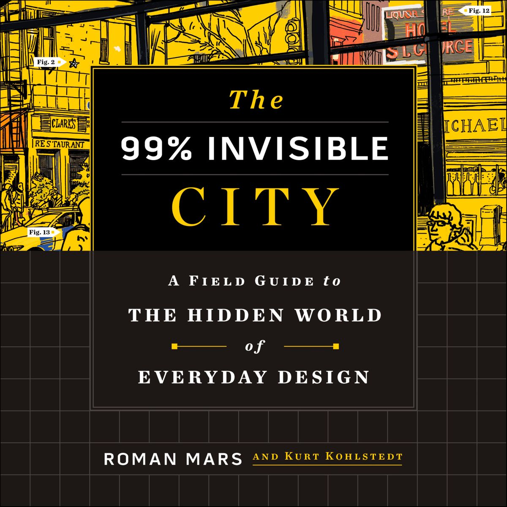

About
99% Invisible is about all the thought that goes into the things we don’t think about — the unnoticed architecture and design that shape our world. With over 400 million downloads, 99% Invisible is one of the most popular podcasts on iTunes and is available on RadioPublic, via RSS and through other apps.

Roman Mars

You might be surprised to learn that Roman Mars does not hold a degree in architecture or design. He actually studied plant population genetics. It’s a long story. Nevertheless, Fast Company named Mars one of the 100 Most Creative People in 2013 and he was a TED main stage speaker in 2015. He produced the most successful crowdfunding campaigns for a podcast in Kickstarter history, and he continues to captivate listeners everywhere as the creator and host of 99pi.
Where to start listening

All of the past episodes are evergreen (that’s radio lingo for “they are never pegged to any date or time”) and they never repeat. So you should subscribe and then immediately download all the back episodes. You will be glad you did. Each episode gets better and better, no matter if you go backwards or forwards. It is amazing and impossible, but also true.